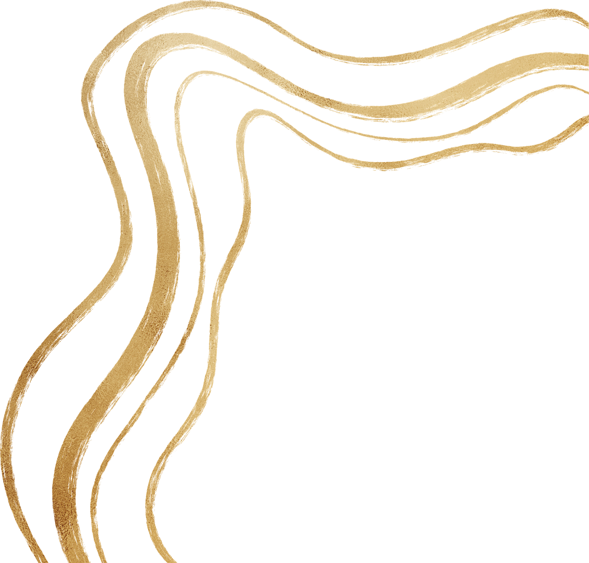
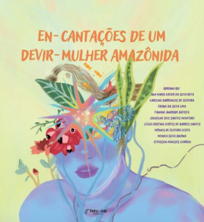

Fotografia / pesquisa visual
O corpo em contaminações de uma esquizo-ciência
Hannyn Barbara Alves Garcia
Desdobramento visual da dissertação sobre corpo, imagens, sensações e esquizo-ciência.
Dissertação em atualizaçãoUm espaço para reunir trabalhos visuais, autoras e os caminhos de leitura das pesquisas que atravessam cada criação.
Inspirado pela leitura editorial de acervos expositivos: imagem em evidência, autoria ao lado e acesso direto ao texto acadêmico.
Hannyn Barbara Alves Garcia
Desdobramento visual da dissertação sobre corpo, imagens, sensações e esquizo-ciência.
Dissertação em atualização
Ana Maria Xavier, Hívina Dorzane Machado, Lúcia Cristina Cortez de Barros Santos, Nereida Tavares Neves e Maria Eduarda Gloria Neves
Composição ligada a escritas, docência mulher e amazônias em ramificação.
Dissertação em atualização
Fabiane Andrade
Registro poético para acolher criações que se movem entre corpo, floresta e experimentação.
Dissertação em atualização
Guilherme Araújo
Arte em diálogo com presenças da floresta, imagem e fabulação amazônica.
Dissertação em atualizaçãoInscreva-se em nossa newsletter para receber atualizações sobre publicações, eventos e oportunidades